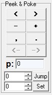
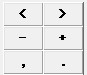
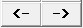
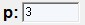
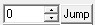
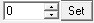

Visual brainfuck has a set of Peek & Poke Buttons that allow the programmer to conveniently:

Peek & Poke buttons

The 6 uppermost buttons execute the indicated brainfuck instructions. There's no button for the [] instructions because these instructions require each other to operate.
The <- and -> buttons move the Program Tape's head in the indicated direction. They can be used for skipping or repeating parts of the code.
The p: indicator shows the current value of the pointer. Not the pointed cell's value, but the address stored in the pointer.
The Jump button sets the entered decimal value into the pointer (i.e. Makes the Memory Tape's head Jump to an arbitrary location).
The Set button sets the entered decimal value into the pointed cell.Copyright © 2003-2011, Kuashio
Created with the Freeware Edition of HelpNDoc: Free help authoring environment